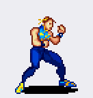
Stance filas 1 + 2 + 3
Las tres filas son un solo bucle, tal y como dijiste: van unidas y se reproducen como una única animación en bucle. No hay stance partido.
- En la hoja: 23 figuras (fila 1 = 10, fila 2 = 6, fila 3 = 7).
- Publicadas: 22 frames (10 + 5 + 7 por fila).
- Se descarta 1 frame, y no por criterio mío: la figura 1 de la fila 2 es idéntica píxel a píxel a la figura 10 de la fila 1 (misma costura de la hoja). Dejando las dos, el bucle se queda parado dos ticks.
- Todas las repeticiones del resto del bucle se quedan: son del dibujo original.
- Lienzo único de 54×70 px: pies en la misma línea y eje de la cabeza al centro, así el bucle no bota ni se va de lado.
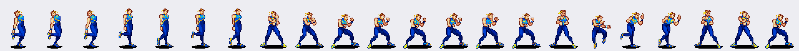
Los 22 frames en orden, tal como se reproducen. Cada uno lleva la cabeza en el mismo eje y los pies en la misma línea.
| Fila | GIF | Animación | Frames | Datos de los frames |
|---|---|---|---|---|
| 1–3 | Stance un solo bucle |
22 | 22 frames · alto 70 px · ancho 54 px · bucle · inclinación 0.6 px | |
| 04 | 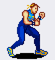 |
Caminar adelante | 7 | Ciclo de 12 frames. Ciclo real de 7 frames (la fila trae tambien la vuelta espejada). · inclinación 3.8 px 7 frames · alto 58 px · ancho 41 px · bucle |
| 05 | 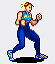 |
Caminar atras | 7 | Fila propia, 12 frames. Ciclo real de 7 frames (la fila trae tambien la vuelta espejada). · inclinación 0.0 px 7 frames · alto 61 px · ancho 41 px · bucle |
| 06 | Patada fuerte (de pie) | 7 | La pierna sube por encima de la cadera. 7 frames · alto 63 px · ancho 58 px · brazo: #3 |
|
| 07 | 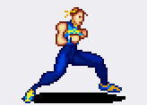 |
Puno fuerte (de pie) | 6 | Brazo extendido al frente. 6 frames · alto 57 px · ancho 68 px · brazo: #3 |
| 08 | 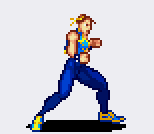 |
Puno debil (de pie) | 6 | Mas corto que el fuerte. 6 frames · alto 65 px · ancho 63 px · brazo: #2, #4 |
| 09 | 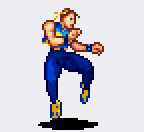 |
Patada debil (de pie) | 5 | Rodilla y extension corta. 5 frames · alto 64 px · ancho 58 px · brazo: #3 |
| 10 | 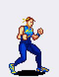 |
Especial ↓ ↓↘ → + patada | 7 | Patada girada con efecto en el pie. 7 frames · alto 76 px · ancho 46 px · pierna: #5, #7 · en el aire: #6 |
| 11 | Especial proyectil | 3 | El proyectil no esta dibujado: se completa con la chispa de Voltia. 3 frames · alto 56 px · ancho 58 px |
|
| 12 | 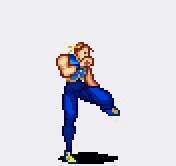 |
Speed kick | 9 | Poses rapidas repetidas; las estelas van dibujadas aparte en la hoja. 9 frames · alto 81 px · ancho 74 px · brazo: #4, #5 |
| 13 | 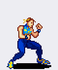 |
Salto en el sitio | 10 | Pies fuera del suelo y vuelta. 10 frames · alto 70 px · ancho 46 px · en el aire: #4, #5, #6, #7, #8 |
| 14 | 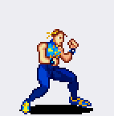 |
Salto adelante | 11 | Invertido sirve de salto atras. 11 frames · alto 70 px · ancho 57 px · en el aire: #4, #5, #6, #7, #8 |
| 15 | Patada adelante-abajo + voltereta atras | 13 | Sube por el pecho del rival y cae con voltereta. 13 frames · alto 70 px · ancho 57 px · brazo: #8, #9, #10 · en el aire: #6, #7, #8, #9, #10 |
|
| 16 | Salto + puno (debil o fuerte) | 11 | Misma animacion para los dos botones; cambia el dano. 11 frames · alto 70 px · ancho 46 px · brazo: #6 · en el aire: #4, #5, #6, #7, #8 |
|
| 17 | Salto + patada (debil o fuerte) | 10 | Misma animacion para los dos botones; cambia el dano. 10 frames · alto 70 px · ancho 46 px · brazo: #7 · en el aire: #4, #5, #6, #7 |
|
| 18 | 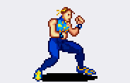 |
Puno fuerte agachada | 12 | Los frames de pie sirven de transicion stance <-> agachada. 12 frames · alto 57 px · ancho 78 px · brazo: #6 |
| 19 | 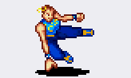 |
Patada fuerte agachada | 6 | Sale desde el suelo. 6 frames · alto 47 px · ancho 68 px · brazo: #3 |
| 20 | Patada debil agachada | 5 | Extension corta. 5 frames · alto 47 px · ancho 58 px · brazo: #2 |
|
| 21 | 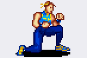 |
Puno debil agachada | 6 | Golpe corto desde agachada. 6 frames · alto 47 px · ancho 59 px · brazo: #3 |
| 22 | Defensa / onda de choque | 8 | Guarda normal; con impactos grandes genera la onda. Arranca el super. 8 frames · alto 74 px · ancho 116 px · bucle |
|
| 23 | 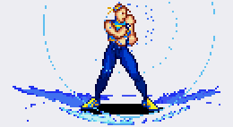 |
Super · esfera envolvente | 6 | La esfera no esta dibujada; son los frames de arranque. 6 frames · alto 69 px · ancho 116 px |
| 24 | 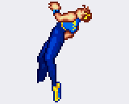 |
Derribo y recuperacion | 11 | Se escogen frames segun la altura de la caida. 11 frames · alto 63 px · ancho 66 px · en el aire: #1, #2, #3, #4, #5 |
Las 24 filas de la hoja, crudas y numeradas (solo para comprobar el recuento)
Aquí no hay ninguna decisión mía: cada GIF lleva todas las figuras de su fila, en el orden en que están. Las filas 1, 2 y 3 aparecen separadas porque así están en la hoja; en el juego son el único stance de arriba. → Las 24 filas juntas en una imagen

| Fila | GIF | y en la hoja | Figuras | Qué es |
|---|---|---|---|---|
| 01 | 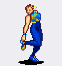 |
7–76 | 10 | Stance · parte 1 de 3 del mismo bucle |
| 02 | 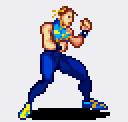 |
85–145 | 6 | Stance · parte 2 de 3 del mismo bucle |
| 03 | 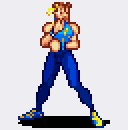 |
152–219 | 7 | Stance · parte 3 de 3 del mismo bucle |
| 04 | 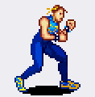 |
226–293 | 12 | Caminar adelante |
| 05 | 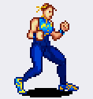 |
299–366 | 12 | Caminar atras |
| 06 | 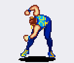 |
375–440 | 7 | Patada fuerte (de pie) |
| 07 | 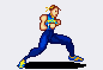 |
444–503 | 6 | Puno fuerte (de pie) |
| 08 | 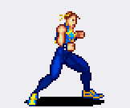 |
509–573 | 6 | Puno debil (de pie) |
| 09 | 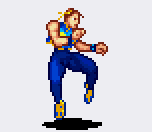 |
586–649 | 5 | Patada debil (de pie) |
| 10 | 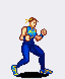 |
657–736 | 7 | Especial ↓ ↓↘ → + patada |
| 11 | 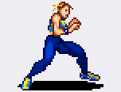 |
749–806 | 3 | Especial proyectil |
| 12 | 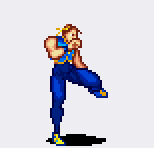 |
827–911 | 9 | Speed kick |
| 13 | 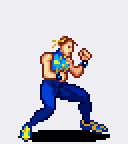 |
926–1047 | 10 | Salto en el sitio |
| 14 | 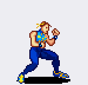 |
1068–1214 | 11 | Salto adelante |
| 15 | 1225–1369 | 13 | Patada adelante-abajo + voltereta atras | |
| 16 | 1383–1514 | 11 | Salto + puno (debil o fuerte) | |
| 17 | 1524–1659 | 10 | Salto + patada (debil o fuerte) | |
| 18 | 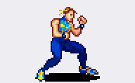 |
1686–1743 | 12 | Puno fuerte agachada |
| 19 | 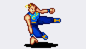 |
1767–1815 | 6 | Patada fuerte agachada |
| 20 | 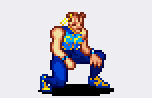 |
1832–1879 | 5 | Patada debil agachada |
| 21 | 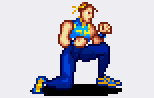 |
1888–1936 | 6 | Puno debil agachada |
| 22 | 1942–2043 | 8 | Defensa / onda de choque | |
| 23 | 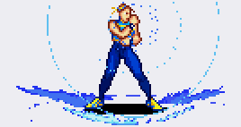 |
2045–2157 | 6 | Super · esfera envolvente |
| 24 | 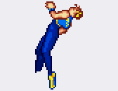 |
2182–2321 | 11 | Derribo y recuperacion |
Lo que no está dibujado en la hoja
- Especial proyectil (fila 11): El proyectil no esta dibujado: se completa con la chispa de Voltia.
- Super · esfera envolvente (fila 23): La esfera no esta dibujada; son los frames de arranque.
- Speed kick (fila 12): las estelas amarillas van dibujadas aparte en la hoja; las poses que se usan son las 9 que salen.
Los nombres y el orden son los de tu lista. Donde el efecto no está dibujado, lo dice: no lo he inventado.